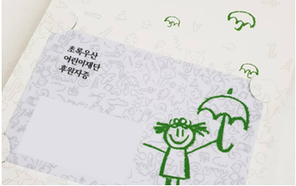
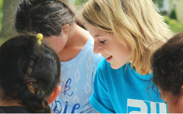
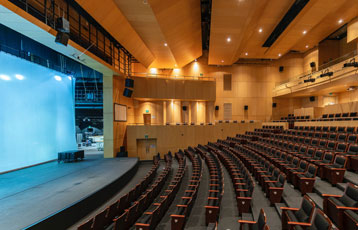

정기후원
후원금은 도움이 필요한 아이들을 위해 소중히 사용됩니다.
여러분의 도움으로 소외된 아이들이 밝고 건강하게 자라납니다.
후원금 이렇게 사용됩니다.
후원금은 매년 공인된 회게법인, 보건복지부 등 관련 기관을 통해 투명성을 검증받으며,
결산 및 사업내용은 재단 및 국세청 공인법인공서 홈페이지에서 확인하실 수 있습니다.


후원자증
특별 축하
후원 1주년, 10주년, 20주년, 30주년의 특별한 기념
일을 맞아 감사카드 및 기념증서를 보내드립니다.

봉사활동
해외사업장 방문
어린이재단 해외사업장을 직접 방문하여 봉사활동 및
문화탐방 등에참가하실 수 있습니다.

행사참여
문화참여 행사
나눔음악회, 이홍렬의 락락페스티벌 등 매년 정기적
으로 열리는 행사에 후원자님을 초대합니다.